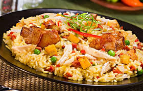
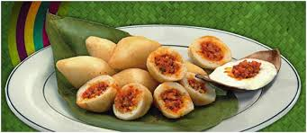
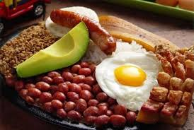
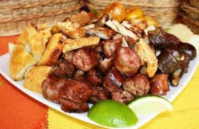

Platillos Colombianos

Arroz atollado
El ingrediente principal de este plato, como su nombre lo indica, es el arroz. También lleva pollo y, dependiendo de la preparación, cerdo y res. Además, se le coloca cebolla, papa y pimientos.
"Viene de los fogones negros de los cortadores de caña y trabajadores de las fincas de mediados del siglo XIX a principios del siglo XX", explica Estrada. "Utilizando las sobras de sus patrones, se hace con un poquito de carne de cerdo, de manteca de cerdo y con pato (que hoy se reemplazó con pollo)".
Carimañola
Es un plato que resume la gran fusión de la cocina colombiana, explica Espinosa.
Un frito con forma de zepelín, que tiene la yuca de tradición indígena por fuera, con relleno de carne molida de res traída por los españoles (también hay una versión con queso) y un sistema de cocción que se atribuye a los africanos.
"En el Pacífico tienen unas muy parecidas", agrega la cocinera, "que cambian de forma, que se llaman repingachos, y se rellenan de pescado".


Bandeja Paisa
Lleva carne, chicharrón, morcilla, chorizo, patacón, aguacate (como mínimo).
"Para mí es un resultado del márketing", dice Estrada. "La bandeja paisasurge en el siglo pasado, hacia la década del 60; fue una brillante idea que tuvo un administrador de unos hoteles de carretera, que tenía una institución turística en (el departamento de) Antioquia, Turantioquia",
Fritanga Bogotana
Lleva carne, chicharrón, morcilla, chorizo, patacón, aguacate (como mínimo).
"Para mí es un resultado del márketing", dice Estrada. "La bandeja paisasurge en el siglo pasado, hacia la década del 60; fue una brillante idea que tuvo un administrador de unos hoteles de carretera, que tenía una institución turística en (el departamento de) Antioquia, Turantioquia",
